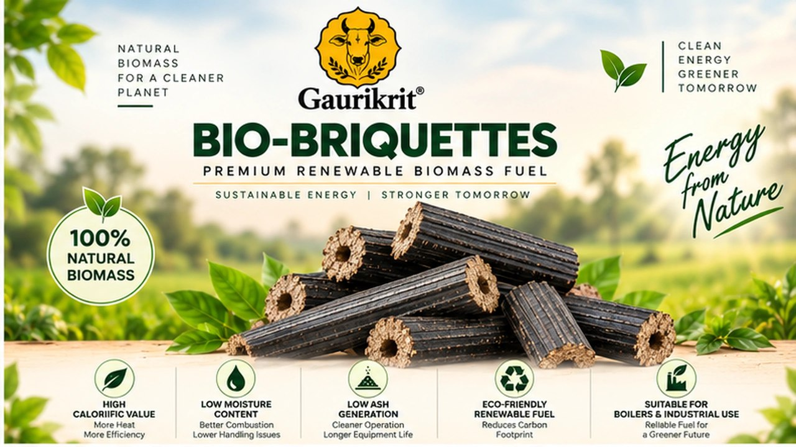
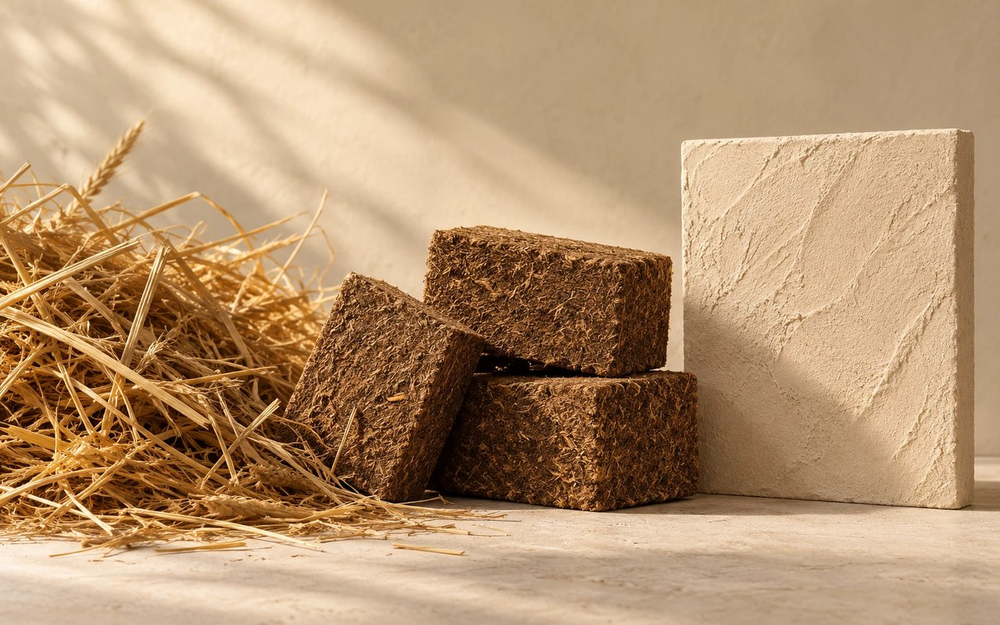
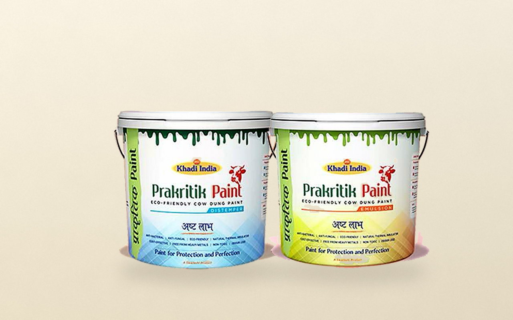
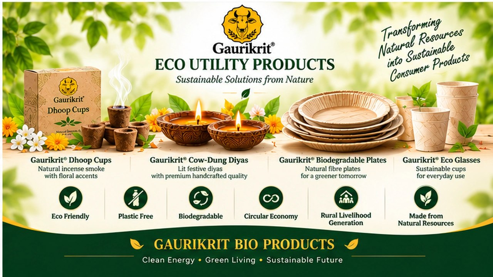

Futureline · Not yet in production
Bio-Briquettes
A biomass-based fuel direction exploring how natural material streams could serve fuel applications. Not yet in production.
Explore the directionGaurikrit’s research direction explores how a natural material understood by tradition can be developed with contemporary methods — into coatings, fuels, composites and building materials.

Illustrative material study — an editorial visual, not a photograph of Gaurikrit products, a production line or an operational facility.
These are research directions — not proven accomplishments, patents or facilities. Each explores how a natural material could serve a contemporary application.
Wall coatings and finishes from naturally derived materials.
Fuel directions from natural biomass material streams.
Composite materials that carry natural fibres and minerals.
Approaches that reduce reliance on fossil-based alternatives.
Construction materials from renewable natural resources.
These focus areas represent research directions only. They are not presented as proven accomplishments, completed research, operational capabilities or commercially available products unless separately documented.
Four principles guide how Gaurikrit approaches each research direction.
Each direction begins with a natural material and its properties, not a market template.
Research is guided by real applications — walls, fuel, ritual and daily use.
Indian material traditions inform where technologies should serve, not erase.
Directions are shared as directions. Results are shared only once verified.
The natural-coatings focus is the most developed: Prakritik Distemper and Prakritik Emulsion are documented, specified products with real client photography — the reference point for how a research direction becomes a Gaurikrit family.

Beyond the documented Eco-Paints family, Gaurikrit explores additional product directions. These are Futureline directions — not yet in production.

A biomass-based fuel direction exploring how natural material streams could serve fuel applications. Not yet in production.
Explore the direction
Practical daily-use products from naturally derived materials — a plastic-reducing direction for homes, gardens and everyday routines. Not yet in production.
Explore the directionResearch programmes, institutions and sustainability partners — talk to Gaurikrit about material directions and collaboration.